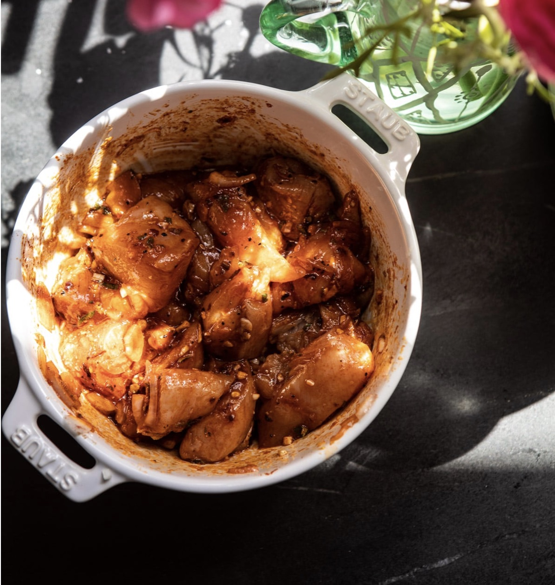
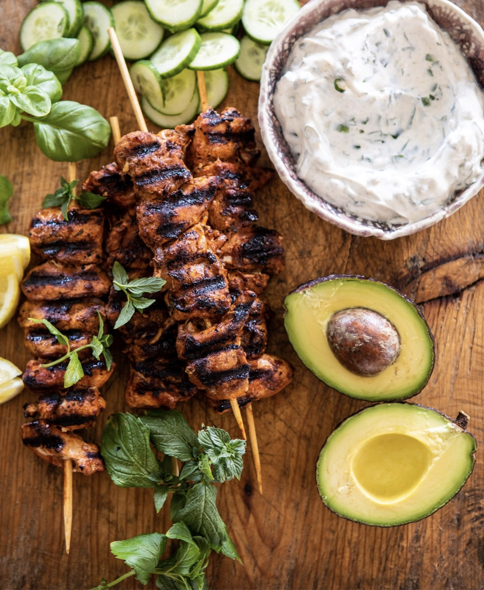

sliced, avocado, Persian cucumbers, olives, basil, for serving
Mint Goddess Sauce
1/4 cup extra virgin olive oil
1 tablespoon chopped fresh mint
1 cup plain Greek yogurt
1/2 cup fresh basil or parsley, chopped
juice from 1 lemon
1 jalapeño, halfed and seeded
1 teaspoon cumin
kosher salt


Instructions
In a gallon size zip top bag, combine the chicken, olive oil, balsamic vinegar, paprika, oregano, shallots, garlic, lemon juice, lemon zest, crushed red pepper, and a large pinch of salt. Marinate for 15 minutes or up to overnight in the fridge.
Meanwhile, make the yogurt. Heat the olive oil in a small skillet over medium heat. When the oil shimmers, remove from the heat and stir in the mint, it will sizzle up. Then set aside.
In a medium bowl, combine the yogurt, basil, lemon juice, jalapeño, cumin, and a pinch of salt.
Set your grill, grill pan or skillet to medium-high heat. Take skewers and thread the chicken pieces on. Alternately, you can roast the chicken at 400 degrees for 20-30 minutes.
Grill the skewers until lightly charred and cooked through, turning them occasionally throughout cooking, about 10 to 12 minutes total.
To serve, spread the yogurt sauce onto plates and drizzle with the mint oil. Add the orzo, peppers, feta, avocado, cucumbers, olives, and chicken. Sprinkle on some greens and herbs. Enjoy!